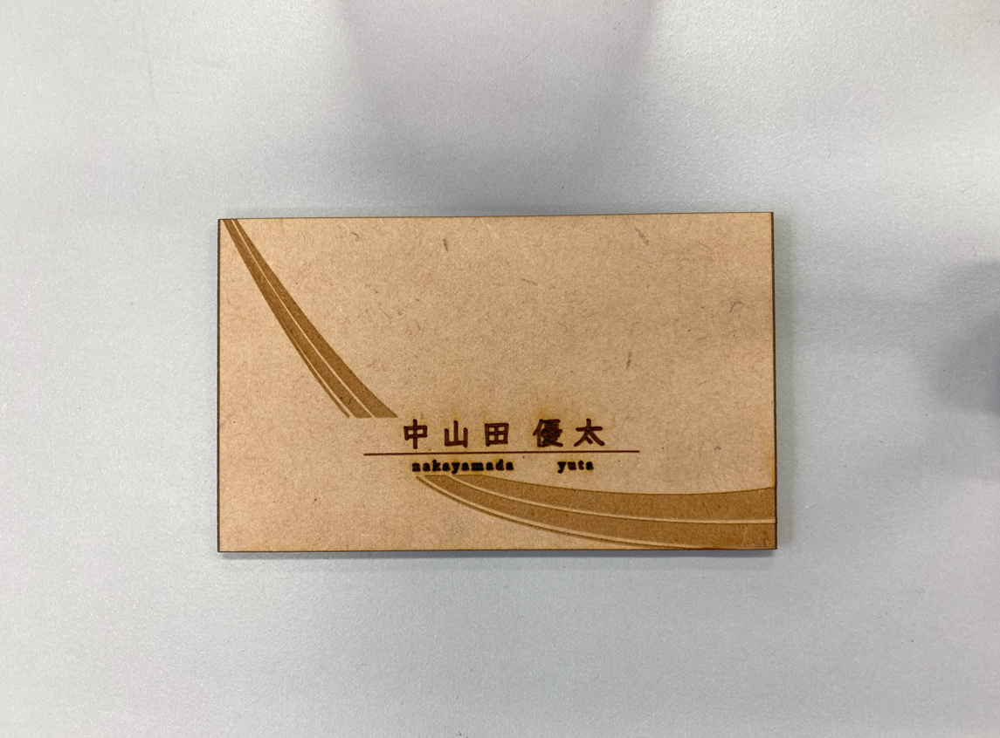

Digital Fabrication
デジタルファブリケーションの授業内に作成した名刺のようなものです。なるべくシンプルでキレイ目な名刺を心がけて製作しました。ただこの名刺すごい分厚いです。
デジタルファブリケーションの授業内に作成した名刺のようなものです。なるべくシンプルでキレイ目な名刺を心がけて製作しました。ただこの名刺すごい分厚いです。
デジタルファブリケーションの授業中に作成したミニサイズの行燈ランプです。illustratorとFusionを使い、レーザーカッターへ出力してこのような作品が完成しました。模様がなかなか複雑なのと、模様の線がすごく細いので折れるか心配でした。
この課題に取り組む際にLOAD画面を作りたくて没頭していたらいつの間にかPOPになっていたので没作品になったものです。hoverするとアイコンとNowLoading...の部分が光るようになっています。
一年生の時に初めて自己紹介をするwebサイトを作りました。一目見たらわかるように素人で、正直まったく凝っていません笑今回のwebサイトは全てYouTubeを見て学びながら制作したので相当時間がかかりました。
この授業内でFigmaをつかって作成した仮想のサイトです。南国のリゾートをイメージとした背景やカラーを主に使用しました。正直Figmaの使い方いまだにまったく理解してません笑
CG応用演習でblenderを使ってキャラクターモデリングをしました。blenderになれてなかったので手こずりましたが何とか作り終えました。